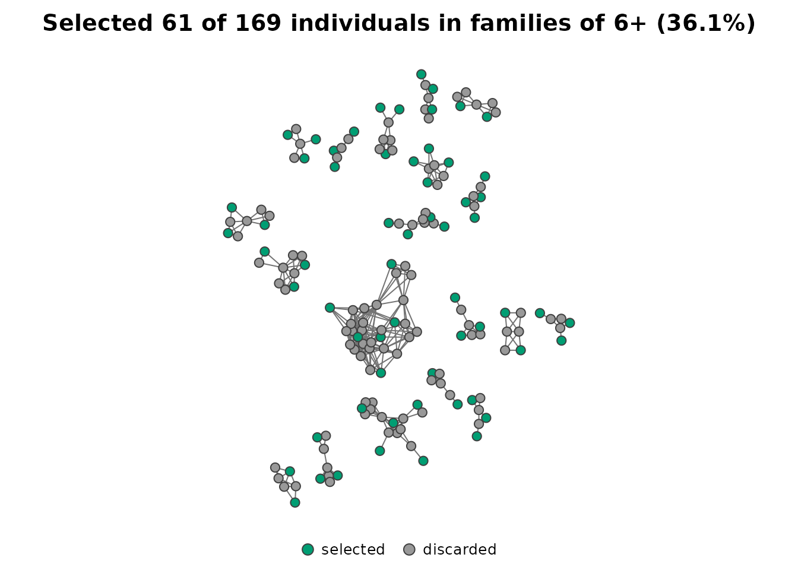

Many genetic analyses require a set of unrelated individuals. RedKinNet selects one from pairwise kinship estimates: pairs related above a threshold form a network, each connected component of the network is a family, and a set of unrelated individuals of the largest possible size, a maximum set, is chosen family by family. This vignette goes through the whole workflow on the example cohort shipped with the package; the vignettes Selecting with covariates and Selection uncertainty cover the other ways of choosing.
The example cohort
rkn_example is a synthetic cohort of 752 samples. Its
kinship table lists the pairs with an estimated kinship of at least
0.02, as written by KING or by PLINK 2 with a minimum kinship; the
samples without relatives appear in no row, so their identifiers come
from a separate table, which also holds the covariates.
kin <- rkn_example$kinship
covariates <- rkn_example$samples
head(kin)
#> id1 id2 kinship
#> 1 S001 S047 0.0369
#> 2 S001 S055 0.1139
#> 3 S001 S578 0.1364
#> 4 S001 S620 0.2500
#> 5 S001 S672 0.0654
#> 6 S002 S323 0.0557
head(covariates)
#> id sex age call_rate
#> 1 S001 <NA> 61 0.9984
#> 2 S002 M 21 0.9808
#> 3 S003 M 48 0.9986
#> 4 S004 F 86 0.9978
#> 5 S005 F 60 0.9986
#> 6 S006 F 58 0.9959Checking the samples
Before selecting, rkn_check_samples() looks for samples
that distort the network: pairs with a kinship above 0.354, possible
duplicates or monozygotic twins, and samples related to unusually many
others, a sign of contamination of the DNA sample.
chk <- rkn_check_samples(kin, threshold = "third", samples = covariates$id)
chk
#> <rkn_sample_check> 752 samples, relatedness threshold 0.0442
#>
#> Possible duplicates or monozygotic twins (kinship >= 0.354): 1 pair(s)
#> id1 id2 kinship
#> S685 S707 0.496
#>
#> Possible contamination: 1 sample(s)
#> (related to unusually many samples)
#> id n_relatives mean_kinship z_relatives z_kinship largest_family_without
#> S672 631 NA 8.9 NA 31
#> Largest family of the network: 717 samples;
#> without all the flagged samples together: 31 samples.
#>
#> Ancestry not assessed: the mean kinship needs every pair of samples.The contaminated sample is related to most of the cohort and holds hundreds of samples in a single family; without it, the largest family is much smaller. The duplicated pair needs no action for the selection, which keeps at most one of the two samples, but it deserves a quality check.
Building the network
rkn_graph_from_kinship() joins the samples whose kinship
reaches the threshold. The threshold is a number or the name of a degree
of relationship, "duplicate", "first",
"second" or "third", for the corresponding
KING cutoff; "third" joins relatives up to first cousins.
The contaminated sample is excluded, and the covariates become vertex
attributes. Since the samples were checked above,
check = FALSE skips the check that the function would
otherwise run.
g <- rkn_graph_from_kinship(kin, threshold = "third", samples = covariates$id,
exclude = chk$contamination$id, covariates = covariates,
check = FALSE)
g
#> IGRAPH b1efea1 UN-- 751 715 --
#> + attr: kinship_threshold (g/n), name (v/c), sex (v/c), age (v/n),
#> | call_rate (v/n), kinship (e/n)
#> + edges from b1efea1 (vertex names):
#> [1] S001--S055 S001--S578 S001--S620 S002--S323 S002--S649 S004--S301
#> [7] S005--S570 S008--S229 S008--S363 S009--S077 S009--S700 S010--S019
#> [13] S010--S101 S010--S300 S010--S310 S010--S320 S010--S553 S010--S659
#> [19] S012--S110 S012--S282 S013--S261 S014--S535 S014--S583 S014--S708
#> [25] S015--S379 S015--S644 S016--S074 S017--S030 S018--S034 S018--S049
#> [31] S018--S135 S018--S150 S018--S286 S018--S350 S018--S370 S018--S551
#> [37] S018--S683 S018--S713 S019--S300 S019--S553 S019--S659 S021--S234
#> + ... omitted several edges
table(igraph::components(g)$csize)
#>
#> 1 2 3 4 5 6 7 8 10 16 31
#> 233 67 26 18 13 7 4 4 2 1 1Most samples have no relatives, and they are always selected; the families with two or more members are those where a choice has to be made.
Selecting unrelated individuals
rkn_select_random() returns a maximum set: each family
is resolved by an exact algorithm that draws one of all its maximum sets
with equal probability. A seed makes the selection reproducible.
sel <- rkn_select_random(g, seed = 1)
sel
#> <rkn_selection> Uniform random selection, seed 1
#> Call: rkn_select_random(g = g, seed = 1)
#> Individuals: 751 | selected: 452 (60.2%)
#> Families: 376 | size min/mean/max: 1 / 2.00 / 31
#> Families with up to 5 members: 357 | with 6 or more: 19
#> Families sampled uniformly among their maximum sets: 376 of 376
#> Maximum sets: 4.4e+54 in total; families with more than one: 127 of 376
#> Two uniform draws differ on average in 84.6 of the 452 selected individuals (18.7%)
head(sel$kept)
#> [1] "S047" "S620" "S339" "S382" "S649" "S003"The printed summary reports how many maximum sets the network has and how much two uniform draws differ on average: the selection is one of many equally valid ones. The vignette Selection uncertainty shows how to quantify the consequences.
With uniform = FALSE, structural rules keep or discard
the members whose fate is the same in the maximum sets they consider,
and the remaining choices are made at random. The result is still a
maximum set, but the rules never choose some of the maximum sets of
larger families.
sel_rules <- rkn_select_random(g, uniform = FALSE, seed = 1)
sel_rules
#> <rkn_selection> Random selection, seed 1
#> Call: rkn_select_random(g = g, uniform = FALSE, seed = 1)
#> Individuals: 751 | selected: 452 (60.2%)
#> Families: 376 | size min/mean/max: 1 / 2.00 / 31
#> Families with up to 5 members: 357 | with 6 or more: 19
#> Families resolved by a search over maximum sets: 18Diagnostics
Each selection records how every individual was decided
(node_diagnostics) and how every family was resolved
(family_summary); the selection by rules also records the
reason of each decision.
head(sel_rules$node_diagnostics[, c("id", "pre_class", "post_class", "family_id", "family_size")])
#> id pre_class post_class family_id family_size
#> 1 S001 candidate_complex discarded 1 5
#> 2 S047 candidate_complex discarded 1 5
#> 3 S055 candidate_complex kept 1 5
#> 4 S578 candidate_complex discarded 1 5
#> 5 S620 candidate_complex kept 1 5
#> 6 S002 kept_apriori kept 2 6
summary(sel_rules)
#> <rkn_selection summary> Random selection, seed 1
#> Individuals: 751 | selected: 452 (60.2%) | families: 376
#>
#> Selection by family structure:
#> size structure families individuals selected
#> 1 single individual 233 233 233
#> 2 related pair 67 134 67
#> 3 chain of three (e.g. parents and child) 9 27 18
#> 3 three mutually related 17 51 17
#> 4 family of 4 members 18 72 29
#> 5 family of 5 members 13 65 27
#> 6-31 family of 6 or more members 19 169 61
#>
#> Individuals by type of decision and outcome:
#> outcome
#> decision selected discarded
#> kept without a choice 311 0
#> discarded without a choice 0 93
#> decided among single candidates 105 151
#> decided among alternative sets 36 55The plots draw the families with the selected and discarded
individuals; min_family_size leaves out the smallest
families.
plot(sel, min_family_size = 6)
Saving the selection
The selected identifiers can be written to a file for downstream tools, for instance as a list of samples to keep in PLINK.
writeLines(sel$kept, "unrelated_samples.txt")